16-825 Assignment 5: PointNet for Classification and Segmentation
Overview
In this assignment, a PointNet based architecture for classification and segmentation with point clouds is implemented. Q1 and Q2 focus on implementing, training and testing models. Q3 quantitatively analyzes model robustness.
Table of Contents
- Q1. Classification Model (40 points)
- Q2. Segmentation Model (40 points)
- Q3. Robustness Analysis (20 points)
Q1. Classification Model (40 points)
Overall Test Accuracy: 92.96%
Visualizations
The visualizations show the original point cloud colored based on the predicted class label (Red = Chair, Green = Vase, Blue = Lamp).
Correct Predictions
| Object | Ground Truth | Prediction |
|---|---|---|
| Chair (Class 0) | ||
| Vase (Class 1) | 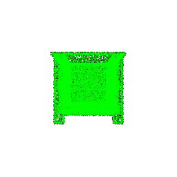 |
|
| Lamp (Class 2) | 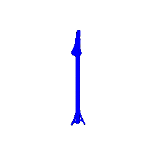 |
Incorrect Predictions
Interestingly, no misclassified chair samples were found in the test set, indicating that the model performs very well on chair classification. However, failure cases were found for vases and lamps:
| Object | Ground Truth | Prediction |
|---|---|---|
| Vase (misclassified as chair) | 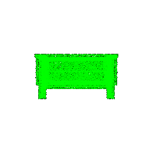 |
|
| Lamp (misclassified as vase) | 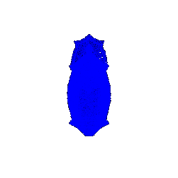 |
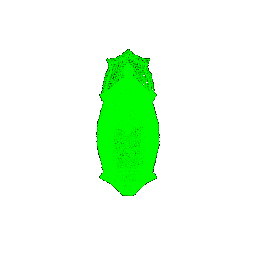 |
The failure cases reveal interesting patterns in the model’s learned representations. The vase misclassified as a chair suggests that certain vase shapes with vertical structures might share geometric features with chairs, particularly in their overall silhouette. Similarly, the lamp misclassified as a vase indicates that lamps with rounded bases and vertical elements can be confused with vases. The absence of chair misclassifications suggests that chairs have more distinctive geometric features (such as seat-back-leg structures) that the model learns to distinguish effectively. These failures highlight that the model relies heavily on global shape features rather than fine-grained details, which can lead to confusion between geometrically similar object classes. A potential way to fix this would be to have an architecture that models local geometric neighborhoods better, so we can discriminate objects using local structure rather than only overall form.
Q2. Segmentation Model (40 points)
Overall Test Accuracy: 82.77%
Visualizations
The visualizations show point clouds colored by their segmentation labels.
Good Predictions
| Sample | Accuracy | Ground Truth | Prediction |
|---|---|---|---|
| Sample 0 | 87.53% | 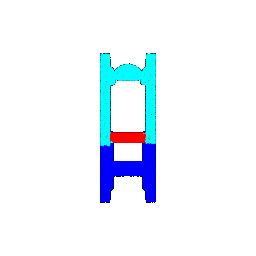 |
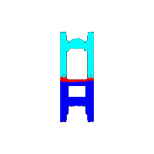 |
| Sample 1 | 86.35% | 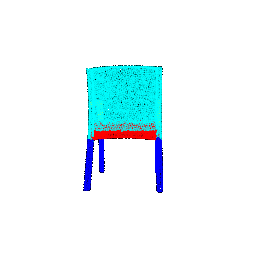 |
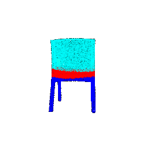 |
| Sample 2 | 96.70% | 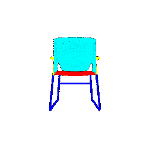 |
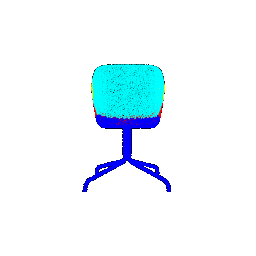 |
| Sample 3 | 94.69% | 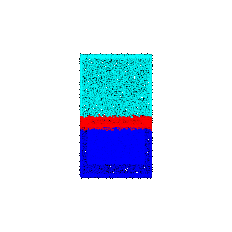 |
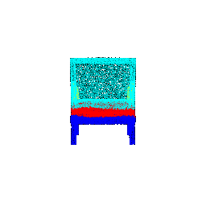 |
Poor Predictions
| Sample | Accuracy | Ground Truth | Prediction |
|---|---|---|---|
| Sample 4 | 62.60% | 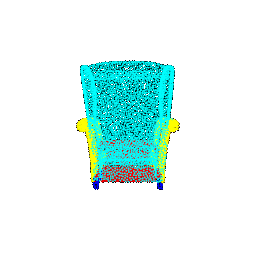 |
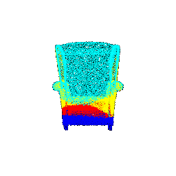 |
| Sample 5 | 79.50% | 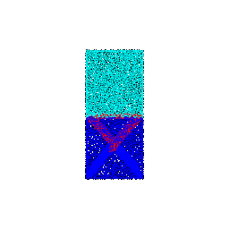 |
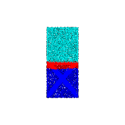 |
The segmentation results show that the model performs well on ‘standard’ chairs that are upright, four legged, and have an obvious back. However, the model struggles on samples with complex geometries, occluded parts, and ambiguous boundaries between segments. A key point to note that this seegmentaiton is messed up only at the boundary of regions indicating that most areas are identified well but the transition between arm and legs or similar features are difficult to comprehend.
Q3. Robustness Analysis (20 points)
Q3.1: Rotation Experiments
To test the robustness of both models, input point clouds were rotated by various angles (10°, 30°, 60°, 90°) around one axis.
Classification
| Rotation | Test Accuracy | Ground Truth | Prediction |
|---|---|---|---|
| 10° | 91.29% |  |
|
| 30° | 54.66% | 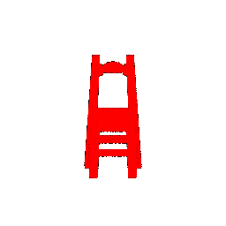 |
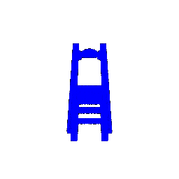 |
| 60° | 25.28% | 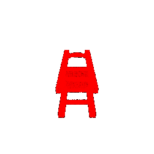 |
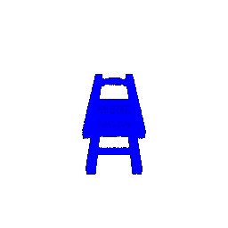 |
| 90° | 21.30% | 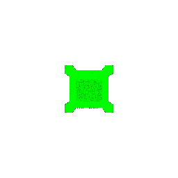 |
The rotation experiments reveal that the classification model is highly sensitive to rotation, with accuracy dropping dramatically with the angle. The model appears to rely heavily on the canonical orientation seen during training, where objects are almost always upright. Thus, PointNet without rotation augmentation learns orientation-specific features rather than rotation-invariant representations.
Segmentation
| Rotation | Test Accuracy | Sample Accuracy | Ground Truth | Prediction |
|---|---|---|---|---|
| 10° | 82.10% | 94.49% | 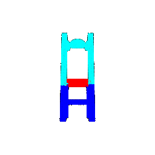 |
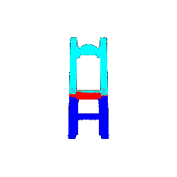 |
| 30° | 67.78% | 64.11% | 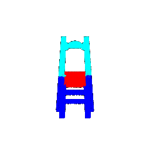 |
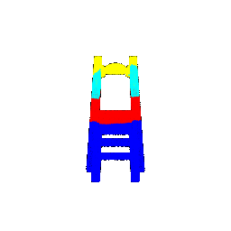 |
| 60° | 29.51% | 51.40% | 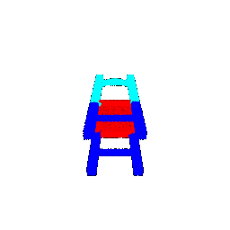 |
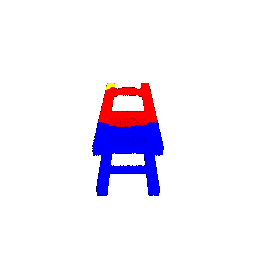 |
| 90° | 25.94% | 39.28% | 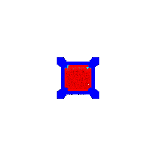 |
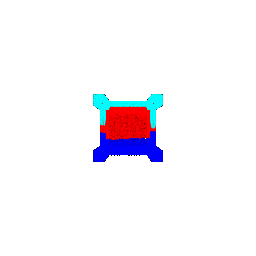 |
Similar to classification, the segmentation model is highly sensitive to rotation. The sample accuracy is higher than the overall test accuracy, indicating that this particular sample is more robust to small rotations than most test samples. But as rotation increases, both metrics drop noticeably. The model also seems to rely on the typical vertical layout of chair parts, predicting legs at the bottom and the base in the middle. When the chair is rotated, these height cues shift, but the model still makes predictions based on the original layout.
Q3.2: Point Count Experiments
To test the robustness of both models, the number of points sampled per object was varied (100, 1000, 2000, 5000, 10000 points).
Classification
| Points | Test Accuracy | Ground Truth | Prediction |
|---|---|---|---|
| 100 | 91.50% | 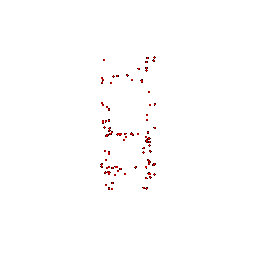 |
 |
| 1000 | 92.65% | 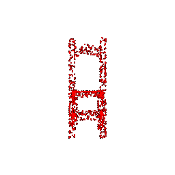 |
 |
| 2000 | 92.65% | 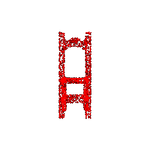 |
|
| 5000 | 92.86% | 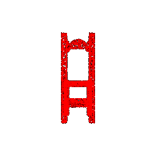 |
|
| 10000 | 92.96% |
Surprisingly the classification model is pretty robust to variations in point cloud density as accuracy remains high even with only 100 points per object, dropping by less than 1.5% compared to the full 10,000 points. This robustness stems from our use of max pooling, which aggregates global features from all points regardless of their density. The max pooling operation extracts the most salient features from the point cloud, making the model relatively insensitive to the total number of points as long as the key discriminative features are present.
Segmentation
| Points | Test Accuracy | Sample Accuracy | Ground Truth | Prediction |
|---|---|---|---|---|
| 100 | 79.87% | 77.00% | 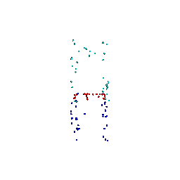 |
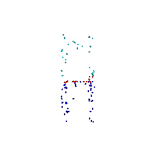 |
| 1000 | 82.18% | 88.50% | 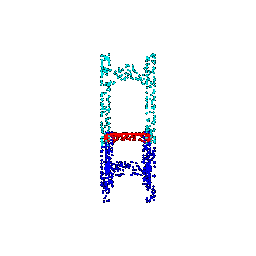 |
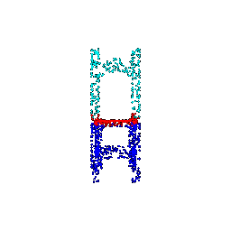 |
| 2000 | 82.58% | 89.35% | 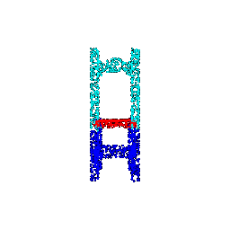 |
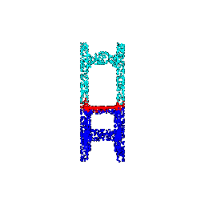 |
| 5000 | 82.71% | 86.88% | 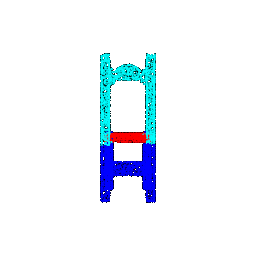 |
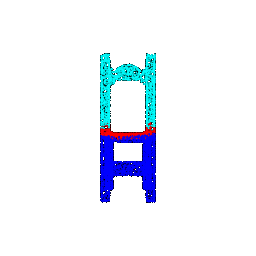 |
| 10000 | 82.77% | 87.53% | 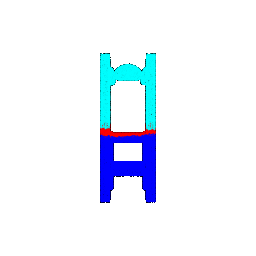 |
The segmentation model also shows good robustness to point count variations, however, there’s more variation in sample accuracy, indicating that individual object performance can vary significantly with their density. The relatively stable test accuracy suggests that PointNet’s architecture can handle different point densities for segmentation, though performance improves with more points as they provide better coverage of object surfaces and boundaries. The variation in sample accuracy highlights that some objects require more points to accurately segment all parts, particularly when dealing with fine details or complex geometries. A possible issue, as noted earlier, is that the model may have overfit to the typical vertical layout of chair components, using height-based cues for arms, bases, and legs, which could explain why segmentation appears strong despite this bias.